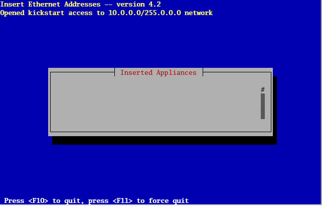
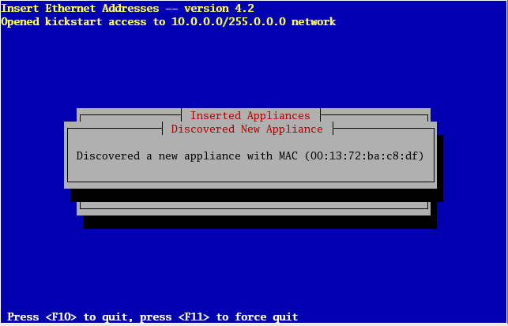
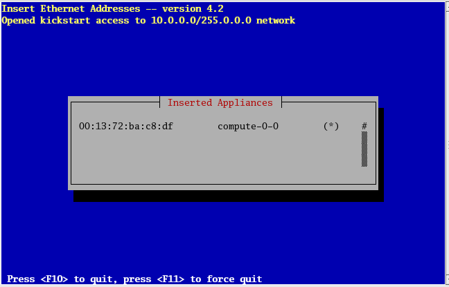

Base Users Guide: 
| ||
|---|---|---|
| Prev | Chapter 3. Installing a Rocks Cluster | Next |
Login to the frontend node as root.
Run the program which captures compute node DHCP requests and puts their information into the Rocks MySQL database:
# insert-ethers |
This presents a screen that looks like:

 | If your frontend and compute nodes are connected via a managed ethernet switch, you'll want to select 'Ethernet Switches' from the list above. This is because the default behavior of many managed ethernet switches is to issue DHCP requests in order to receive an IP address that clients can use to configure and monitor the switch. When insert-ethers captures the DHCP request for the managed switch, it will configure it as an ethernet switch and store that information in the MySQL database on the frontend. As a side note, you may have to wait several minutes before the ethernet switch broadcasts its DHCP request. If after 10 minutes (or if insert-ethers has correctly detected and configured the ethernet switch), then you should quit insert-ethers by hitting the F8 key. Now, restart insert-ethers and continue reading below to configure your compute nodes. |
Take the default selection, Compute, hit 'Ok'.
Then you'll see:

This indicates that insert-ethers is waiting for new compute nodes.
Power up the first compute node.
 | The BIOS boot order of your compute nodes should be: CD, PXE (Network Boot), Hard Disk. If your compute nodes don't support PXE, then you'll need to boot your compute nodes with the Kernel Roll CD. If you don't have a CD drive in your compute nodes and if the network adapters in your compute nodes don't support PXE, see Using a Floppy to PXE boot. |
When the frontend machine receives the DHCP request from the compute node, you will see something similar to:

This indicates that insert-ethers received the DHCP request from the compute node, inserted it into the database and updated all configuration files (e.g., /etc/hosts, /etc/dhcpd.conf and DNS).
The above screen will be displayed for a few seconds and then you'll see the following:

In the above image, insert-ethers has discovered a compute node. The "( )" next to compute-0-0 indicates the node has not yet requested a kickstart file. You will see this type of output for each compute node that is successfully identified by insert-ethers.

Figure: The compute node has successfully requested a kickstart file from the frontend. If there are no more compute nodes, you may now quit insert-ethers. Kickstart files are retrieved via HTTPS. If there was an error during the transmission, the error code will be visible instead of "*".
At this point, you can monitor the installation by using rocks-console. Just extract the name of the installing compute node from the insert-ethers output (in the example above, the compute node name is compute-0-0), and execute:
# rocks-console compute-0-0 |
After you've installed all the compute nodes in a cabinet, quit insert-ethers by hitting the 'F8' key.
After you've installed all the compute nodes in the first cabinet and you wish to install the compute nodes in the next cabinet, just start insert-ethers like:
# insert-ethers --cabinet=1 |
This will name all new compute nodes like compute-1-0, compute-1-1, ...